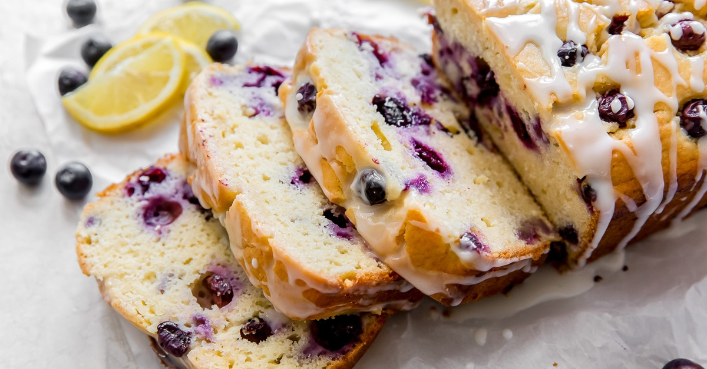

Lemon Blueberry Bread with Lemon Glaze

Description
Lemon blueberry bread is a zesty quick bread bursting with fresh blueberries. The lemon icing adds another layer of tart sweetness that is simply delicious!
Ingredients
- 2 cups (250 g) all-purpose flour
- 2 teaspoons baking powder
- ½ teaspoon salt
- ¾ cup (150 g) granulated sugar
- 1 Tablespoon lemon zest
- ½ cup (113 g) unsalted butter, melted and slightly cooled
- 2 large eggs, room temperature
- ⅓ cup (80 ml) whole or low-fat milk, room temperature
- ¼ cup (60 g) sour cream, room temperature
- 1 teaspoon pure vanilla extract
- 2 Tablespoons fresh lemon juice
- 1 ¼ cups fresh blueberries
Lemon Glaze
- ½ cup (60 g) confectioners’ sugar, sifted
- 1-2 Tablespoons fresh lemon juice
Steps
- Preheat the oven to 350° F. Line a 9-inch by 5-inch loaf pan with parchment paper and set aside.
- In a large bowl, whisk together flour, baking powder and salt. Set aside.
- In a medium bowl, combine sugar and lemon zest. Rub the lemon zest into the sugar to increase its flavor. Add melted butter and whisk vigorously until butter is absorbed and mixture is light yellow. Add eggs and whisk until combined. Add milk, sour cream, vanilla and lemon juice and mix until combined.
- Pour wet ingredients over dry ingredients. Mix just until combined. Use a rubber spatula to stir in blueberries.
- Transfer batter to prepared loaf pan. Bake for 1 hour to 1 hour and 10 minutes, or until a toothpick inserted in the center comes out with little to no crumbs. Let loaf cool in pan for 10 to 15 minutes, before removing from pan to cool completely
- To make the glaze, whisk together confectioners’ sugar and 1 tablespoon lemon juice. If a thinner consistency is desired, add more lemon juice 1 teaspoon at a time. Drizzle over cooled loaf, slice and serve